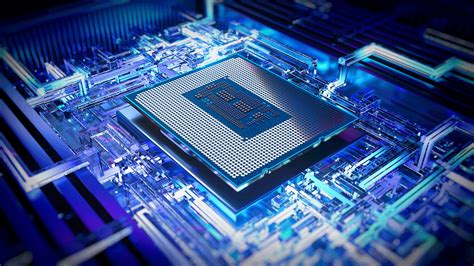
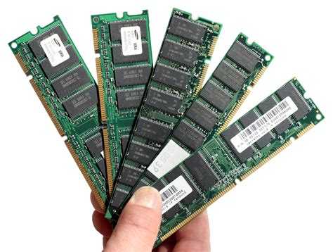
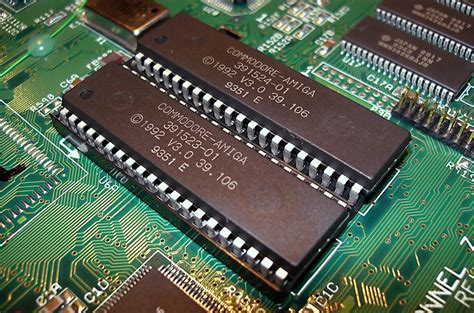
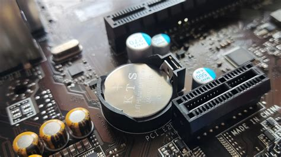
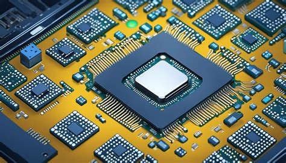

Struktur Sistem Komputer & Arsitektur Utama
Sistem komputer terdiri dari empat komponen struktural utama yang saling terhubung untuk menjalankan pemrosesan data secara digital:

Deskripsi & Fungsi
Papan sirkuit cetak utama (PCB) yang berfungsi sebagai tulang punggung komputer, menyediakan jalur komunikasi elektrik (bus) yang menghubungkan seluruh komponen internal seperti CPU, RAM, ROM, serta modul I/O eksternal.
Label & Fitur Utama Pemetaan
Northbridge (dengan heatsink), IDE Connector (x2), DRAM Memory Slot (x2), 20-pin ATX Power Connector, CPU Fan Mounting Points, CPU Socket, Southbridge, PCI Slot (x5), AGP Slot, CMOS Battery, Port Terintegrasi (PS/2, Serial, Paralel, USB, Ethernet, Audio).
Ekspansi & Konektivitas Terintegrasi
- Slot PCI Express x16 & AGP: Tempat khusus memasang kartu VGA/Grafis berkecepatan tinggi untuk mereduksi beban pemrosesan visual CPU.
- Slot PCI Express x1: Untuk kartu peripheral tambahan (Sound Card, LAN Card eksternal).
- Interface Port: Port Paralel (LPT) & Serial (COM) untuk perangkat lawas, Port AT/PS2 (Mouse/Keyboard), Port USB (Universal modern), serta output display (VGA, DVI, HDMI).
⚠️ Umum Kerusakan & Solusi
Masalah: Komputer mati total, sering restart mendadak, atau kapasitor menggelembung (korosi elektrik).
Solusi: Lakukan pengecekan fisik modul kapasitor (re-kapasitansi), bersihkan debu korosif dengan cairan cleaner kontak elektro, atau ganti mainboard jika terjadi kerusakan sirkuit jalur bus utama.
Perkembangan Variasi

Deskripsi & Fungsi
Otak utama dari sistem komputer yang bertugas mengeksekusi instruksi, melakukan kalkulasi aritmatika dan logika (ALU), serta mengendalikan aliran data sistem secara keseluruhan.
Evolusi Soket & Dudukan
Dudukan prosesor berkembang pesat dari model lama ZIF Socket 7 (kompatibel Intel/AMD/Cyrix generasi awal), Socket 370, hingga transisi ke arsitektur modern seperti LGA 775 (Pentium T), LGA 1366, LGA 1155/1156 (Sandy/Ivy Bridge), dan LGA 2011 dengan dukungan quad-channel memori serta lajur PCIe terintegrasi langsung pada CPU.
⚠️ Umum Kerusakan & Solusi
Masalah: Overheating (panas berlebih), menyebabkan sistem mendadak freeze atau thermal shutdown otomatis.
Solusi: Ganti thermal pasta secara berkala, bersihkan heatsink fan dari sumbatan debu, atau tingkatkan ke sistem pendingin cair (Liquid Cooler) berkualitas tinggi.
Perkembangan Variasi

Deskripsi & Fungsi
Memori utama komputer bersifat volatile (data hilang saat daya mati) berbasis Dynamic RAM yang menggunakan kombinasi ultra-kompak transistor dan kapasitor untuk menyimpan data instruksi aktif yang sedang diolah oleh CPU secara instan.
Evolusi Generasi & Varian
- SDRAM & DDR: Menggantikan pin SIMM (30/72 pin) lama ke DIMM. DDR melipatgandakan kecepatan clock asli (DDR-200 berjalan pada clock fisik 100MHz).
- DDR2 & DDR3: Standar era Core 2 Duo/Quad dan i-series awal dengan peningkatan frekuensi transfer data yang signifikan.
- DDR4 & DDR5: DDR4 (2133-3200MHz) menawarkan kerapatan tinggi. DDR5 melompat drastis dengan kapasitas per keping teoritis melampaui 128GB, efisiensi dual-channel internal per modul, bandwidth dua kali lipat, dan efisiensi daya ekstrim untuk kebutuhan multitasking tinggi.
⚠️ Umum Kerusakan & Solusi
Masalah: Komputer mengeluarkan bunyi BIP berulang saat dinyalakan, tidak tampil gambar di monitor (No Display), atau terjadi Blue Screen of Death (BSOD).
Solusi: Lepaskan modul RAM, bersihkan pin tembaga menggunakan penghapus pensil, pindahkan ke slot alternatif, atau ganti modul jika terdeteksi error permanen via uji memtest86.
Perkembangan Variasi

Deskripsi & Fungsi
ROM berfungsi menyimpan firmware dasar secara non-volatile (permanen). Dalam arsitektur penyimpanan massal modern yang terhubung ke interface motherboard, fungsi ini bersandingan dengan sistem pengelolaan hard drive, SSD, maupun drive optik.
Transisi Interface: IDE ke SATA
Konektor IDE (Primary/Secondary) lawas mengandalkan transfer paralel data yang terbatas dan kaku. Standar ini digantikan secara total oleh SATA (Serial ATA) yang membawa keunggulan mutlak berupa kecepatan transfer data tinggi, fitur Hot-Swapping (mengganti perangkat tanpa mematikan komputer), serta dukungan teknologi Native Command Queueing (NCQ) untuk optimasi urutan perintah baca/tulis data pada drive.
⚠️ Umum Kerusakan & Solusi
Masalah: Sistem operasi gagal memuat data (Bootable device not found), corrupt firmware, atau siklus baca/tulis media penyimpanan menurun tajam.
Solusi: Lakukan peremajaan kabel interface SATA, lakukan flashing/update firmware ROM berkala, atau migrasikan media penyimpanan mekanis (HDD) ke teknologi berbasis Solid State Drive (SSD).
Perkembangan Variasi

Deskripsi & Fungsi
BIOS: Chip firmware penyedia instruksi tingkat rendah sebagai interface antara hardware dengan OS, mengontrol proses inisialisasi booting awal (POST).
Baterai CMOS: Sumber daya baterai koin independen yang menyuplai energi konstan bagi chip CMOS agar konfigurasi parameter sistem, jam internal real-time clock (IC RTC), serta pengaturan hardware terintegrasi tidak ter-reset saat suplai listrik utama padam.
⚠️ Umum Kerusakan & Solusi
Masalah: Muncul peringatan error "CMOS Checksum Error", jam/tanggal komputer selalu kembali ke tahun jadul setiap PC dinyalakan, atau kegagalan simpan konfigurasi BIOS (harus tekan F2/F1 terus menerus).
Solusi: Lakukan pergantian unit baterai koin CMOS tipe CR2032 dengan yang baru, pastikan kedudukan baterai terpasang presisi di klip penahan motherboard.
Perkembangan Variasi

Deskripsi & Fungsi
Komponen penyuplai daya yang mengubah arus bolak-balik (AC) tegangan tinggi dari jala listrik menjadi arus searah (DC) voltase rendah (+3.3V, +5V, +12V, -12V) sesuai dengan spesifikasi kebutuhan energi komponen komputer.
Spesifikasi Pinout AT vs ATX
- Tipe AT (Legacy): Menggunakan dua konektor terpisah yang ditancapkan bersisian (Kabel Kuning = 12v, Merah = 5v, Hitam = Ground/0v, Oranye = 3.3v).
- Tipe ATX (Modern): Menggunakan satu block header utuh terpadu pinout (20-pin hingga 24-pin) dilengkapi jalur sinyal canggih seperti PS-ON (Power Supply On untuk manajemen software) dan +5VSB (Standby Voltage).
⚠️ Umum Kerusakan & Solusi
Masalah: Fluktuasi tegangan drop (PC mendadak restart saat beban kerja tinggi/gaming), atau PSU mati total akibat lonjakan listrik eksternal.
Solusi: Gunakan UPS/Stabilizer eksternal untuk proteksi arus, lakukan pengujian jumper manual pin PS-ON (hijau) ke ground (hitam) untuk tes kelayakan, dan selalu gunakan PSU bersertifikasi efisiensi tinggi (80 Plus).
Perkembangan Variasi

Deskripsi & Fungsi
Sekelompok sirkuit terpadu (IC) cerdas yang bertindak sebagai jembatan lalu lintas data internal utama, mengontrol komunikasi performa tinggi dan peripheral eksternal komputer.
Arsitektur Klasik vs Arsitektur Modern
- Northbridge (MCH / Memory Controller Hub): Mengatur jalur data kritis super cepat ekstrim antara CPU, RAM, dan kartu grafis (AGP/PCIe).
- Southbridge (ICH / I/O Controller Hub): Mengendalikan interaksi peripheral dengan kecepatan bus lebih lambat seperti kontroler IDE/SATA, USB, audio, LAN, mouse, keyboard, dan power management.
- System-on-Chip (SoC): Konsep modern yang mereduksi dan melebur fungsi Northbridge dan Southbridge langsung masuk bersatu di dalam die prosesor tunggal guna memangkas latensi, menghemat ruang, serta meningkatkan efisiensi komputasi portabel (seperti modul audio on-board Realtek ALC dan kartu VGA terintegrasi).
⚠️ Umum Kerusakan & Solusi
Masalah: Chipset mengalami overheat parah berujung pada hilangnya deteksi fungsionalitas I/O terintegrasi secara acak (port USB mati mendadak, audio hilang).
Solusi: Optimalkan sirkulasi udara casing komputer, pasang thermal pad baru di bawah heatsink pasif penutup chipset, atau gunakan pendingin kipas kecil tambahan.